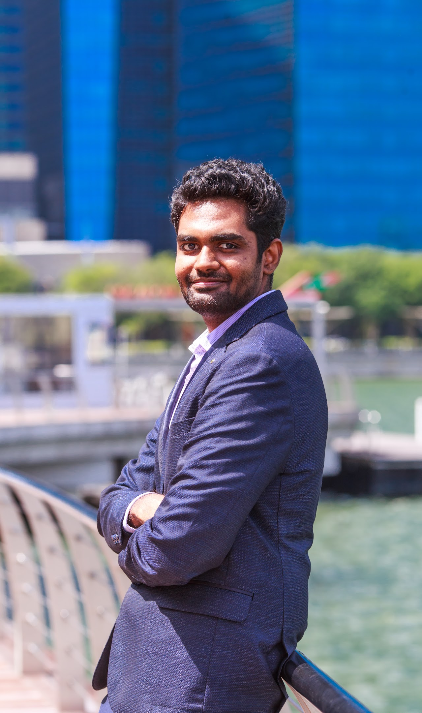

Sai Ganesh Nagarajan is a postdoctoral researcher leading the Efficient and Sustainable Learning thrust at the IOL Lab, Zuse Institute Berlin. He previously held a postdoc in the Algorithms Group at EPFL and earned his PhD (President’s Graduate Fellowship) from the Singapore University of Technology and Design. Before that, he spent three years at Singapore’s Institute for Infocomm Research, where he developed spatio‑temporal statistical models and anomaly‑detection solutions for the Housing Development Board, the Ministry of Health, and various SMEs. Notably, he contributed to the Ministry of National Development’s R&D Award–winning project on understanding micro‑climatic effects of building design (UM-MIST).
Short Abstract: Adversarial multiplayer games are an important object of study in multiagent learning. In particular, polymatrix zero-sum games are a multiplayer setting where Nash equilibria are known to be efficiently computable. Towards understanding the limits of tractability in polymatrix games, we study the computation of Nash equilibria in such games where each pair of players plays either a zero-sum or a coordination game. A setting that is particularly interesting is where players can be grouped into a small number of teams of identical interest [Von Stengel and Koller 1997]. While the three-team version of the problem is known to be PPAD-complete, the complexity for two teams has remained open [Cai and Daskalakis 2011]. In this talk, we show that the two-team version is CLS-hard and we do so by proving the hardness of finding any stationary point in the simplest type of non-convex-concave min-max constrained optimization problem, namely for a class of bilinear polynomial objective functions. Finally, we discuss some algorithms for a restricted version of this problem, namely a team with non-interacting adversaries.